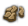
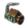
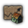

欧陆风云4的世界被划分成了无数个省份，又可以按区域（areas）、地区（regions）、次大陆（Subcontinent）和大陆（continents）来分类。这些分类在游戏中扮演了重要的角色，往往作为各种事件、决议等等的触发条件。
区划结构
{kind=link}
省份、区域、地区、次大陆和大陆这五个层级从小至大，呈一种树状的从属关系。每一个省份[1] 都隶属于一个区域[2]，区域又隶属于一个地区[3]，而地区又隶属于次大陆[4]（游戏内亦称“大区”）。此结构便于玩家一窥各区域之内部状况，亦允许玩家按树索骥，快速找到任务或胜利卡等的目标省份。区域作为最小级集合，内含2~5个省份。这些省份或是有一定历史渊源，或是发展程度相似。而且地区也是直属州与自治领地这一机制的存在基础。
在此之上，每一个陆地省份（包含荒芜之地）都还隶属于一个大陆[5]。大陆与其余层级无关。在1.26版以前，某些地区甚至直接横跨两个大陆。
而每一个海洋省份虽然也从属于某个地区及区域，却不属于任一大区。海洋区划是海军任务这一机制的基准，与贸易节点无关。
重叠区划[6] 可通过修改游戏文件增加，在无模组游戏中不存在此概念。
注意：同名的大区和大陆之边界并不一定相同。
地区命名
如果国家拥有的某片地区不与首都相连，则该地区会显示为国名+该片地区名之形式。可以在设置中选择开闭此功能。
上述之“该片地区名”由该片区域之规模决定：
- 与首都同属某一区域之飞地仍直接沿用国名，如法兰西。
- 主要属于某一地区的小型飞地采用其区域名，如法属亚历山大。
- 主要属于某一区域的大型飞地采用其地区名，如法属埃及。
- 任一区域的省份占比都不超过50%的巨型飞地采用次大陆名，如法属中东。
观看模式
- 主条目：地图#地理地图模式
共有两种地图模式可以观看省份分类。地区模式依地区上色；区域模式依区域上色，点击地区以高亮其中的各区域。
大陆
- 参见：省份列表
|
|
大陆（continent[7]，根据语境也称为大洲）是地球上封闭的陆块。每一个陆地省份（包括荒芜之地）都属于某一个大洲。一些海区也属于大洲，但是大部分显然不属于。
下列表格列出了游戏内的大陆及其各自的数值（不包括荒芜之地和海区）：
| 大洲 |  省份数目 | 基础税收 |  基础生产 | 基础人力 |  发展度 |
|---|---|---|---|---|---|
| 非洲 | 438 | 924 | 916 | 656 | 2496 |
| 亚洲 | 1133 | 3038 | 2989 | 2172 | 8199 |
| 欧洲 | 827 | 2709 | 2675 | 1811 | 7195 |
| 北美洲 | 535 | 939 | 936 | 580 | 2455 |
| 大洋洲 | 90 | 170 | 170 | 115 | 455 |
| 南美洲 | 249 | 399 | 433 | 271 | 1103 |
| 合计 | 3272 | 8179 | 8119 | 5605 | 21903 |
区域列表
次大陆
|
|
|
所有的陆地区域被组合进游戏内的以下次大陆（大区）：
- 印度（India）
- 孟加拉（Bengal）
- 印度斯坦（Hindustan）
- 印度西部（Western India）
- 德干（Deccan）
- 科罗曼德（Coromandel）
- 东印度（East Indies）
- 缅甸（Burma）
- 马来亚（Malaya）
- 摩鹿加（Moluccas）
- 印度尼西亚（Indonesia）
- 印度支那（Indochina）
- 大洋洲（Oceania）
- 大洋洲（Oceania）
- 澳大利亚（Australia）
- 中国（China）
- 华北（North China）
- 西南（Xinan）
- 华南（South China）
- 西欧（Western Europe）
- 法兰西（France）
- 伊比利亚（Iberia）
- 意大利（Italy）
- 不列颠（Britain）
- 南德意志（South Germany）
- 北德意志（North Germany）
- 斯堪的纳维亚（Scandinavia）
- 低地（Low Countries）
- 东欧（Eastern Europe）
- 波兰（Poland）
- 波罗的（Baltic）
- 俄罗斯（Russia）
- 鲁塞尼亚（Ruthenia）
- 卡帕提亚（Carpathia）
- 巴尔干（Balkans）
- 东欧大草原（Pontic Steppe）
- 乌拉尔（Ural）
- 鞑靼（Tartary）
- 东西伯利亚（East Siberia）
- 西西伯利亚（West Siberia）
- 蒙古（Mongolia）
- 中亚（Central Asia）
- 西藏（Tibet）
- 远东（Far East）
- 朝鲜（Korea）
- 日本（Japan）
- 满洲（Manchuria）
- 非洲北部（Northern Africa）
- 马格里布（Maghreb）
- 非洲之角（Horn of Africa）
- 萨赫勒（Sahel）
- 尼日尔（Niger）
- 几内亚（Guinea）
- 非洲南部（Southern Africa）
- 刚果（Congo）
- 中非（Central Africa）
- 东非（East Africa）
- 南非（South Africa）
- 亚马逊（Amazonia）
- 巴西（Brazil）
- 哥伦比亚（Colombia）
- 安第斯（Andes）
- 秘鲁（Peru）
- 上秘鲁（Upper Peru）
- 拉普拉塔（La Plata）
- 北美（North America）
- 哈德孙湾（Hudson Bay）
- 卡斯卡迪亚（Cascadia）
- 大平原（Great Plains）
- 密西西比（Mississippi）
- 北美东南（Southeast）
- 北美东北（Northeast）
- 五大湖区（Great Lakes）
- 加拿大（Canada）
- 中美洲（Central America）
- 中美洲（Central America）
- 墨西哥（Mexico）
- 加勒比（Caribbeans）
- 里奥格兰德（Rio Grande）
- 加利福尼亚（California）
- 黎凡特（Levant）
- 安纳托利亚（Anatolia）
- 马什里克（Mashriq）
- 阿拉伯（Arabia）
- 埃及（Egypt）
- 波斯（Persia）
- 呼罗珊（Khorasan）
- 波斯（Persia）
- 高加索（Caucasia）
海区
除陆地地区外的海洋地区被分成下列的两类（内海 区域提供桨帆船战斗加成）：
- 波罗的海（Baltic Sea）
- 地中海（Mediterranean）
- 阿拉伯海（Arabian Sea）
- 印度洋东部（Eastern Indian Ocean）
- 南海（South China Sea）
- 东海（East China Sea）
- 无内海地区
- 东北太平洋（North East Pacific）
- 东南太平洋（South East Pacific）
- 南美西海岸（Pacific South America）
- 南美东海岸（Atlantic South America）
- 加勒比海（Caribbean Sea）
- 北美东海岸（American East Coast）
- 北大西洋（North Atlantic）
- 西非海（West African Sea）
- 南大西洋（South Atlantic）
- 印度洋西部（Western Indian Ocean）
- 印度洋南部（South Indian Ocean）
- 西南太平洋（South West Pacific）
- 西北太平洋（North West Pacific）
地区列表
以下地区列表分为陆地和海洋地区，并进一步分为各区域，各地区文件里的区域名开头为小写。单击某个区域名称可获得更详细的省份页面。要快速找到某个特定的地区，使用 ^Ctrl + F 搜索或者浏览列表。
陆地区域
- 法兰西（France）
- 布列塔尼（Brittany）
- 诺曼底（Normandy）
- 普罗旺斯（Provence）
- 吉耶纳（Guyenne）
- 朗格多克（Languedoc）
- 奥弗涅（Auvergne）
- 萨伏依（Savoy）
- 洛林（Lorraine）
- 皮卡第（Picardy）
- 香槟（Champagne）
- 法兰西岛（Île-de-France）
- 卢瓦尔河谷（Loire Valley）
- 东勃艮第（Eastern Burgundy）
- 西勃艮第（Western Burgundy）
- 加斯科涅（Gascony）
- 普瓦图（Poitou）
- 奥尔良（Orléanais）
- 斯堪的纳维亚（Scandinavia）
- 西斯韦阿兰（Västra Svealand）
- 诺尔兰（Norrland）
- 东约塔兰（Östra Götaland）
- 斯科讷（Skåneland）
- 北日德兰（North Jutland）
- 丹麦（Denmark）
- 芬兰（Finland）
- 特伦德拉格（Trøndelag）
- 东挪威（Østlandet）
- 韦斯特兰（Vestlandet）
- 东博滕（Ostrobothnia）
- 北大西洋诸岛（North Atlantic Islands）
- 拉普兰（Laponia）
- 西约塔兰（Västra Götaland）
- 东斯韦阿兰（Östra Svealand）
- 低地（Low Countries）
- 瓦隆尼亚（Wallonia）
- 佛兰德（Flanders）
- 荷兰（Holland）
- 弗里斯兰（Frisia）
- 南布拉班特（South Brabant）
- 北布拉班特（North Brabant）
- 意大利（Italy）
- 威尼斯（Venetia）
- 伦巴第（Lombardy）
- 皮埃蒙特（Piedmont）
- 托斯卡纳（Tuscany）
- 利古里亚（Liguria）
- 西地中海诸岛（Western Mediterranean Islands）
- 东西西里（Eastern Sicily）
- 坎帕尼亚（Campania）
- 卡拉布里亚（Calabria）
- 阿普利亚（Apulia）
- 艾米利亚-罗马涅（Emilia-Romagna）
- 马尔什-阿布鲁佐（Marche-Abruzzo）
- 拉齐奥-翁布里亚（Lazio-Umbria）
- 波河平原（Po Valley）
- 西西西里（Western Sicily）
- 北德意志（North Germany）
- 厄尔士山脉（Erzgebirge）
- 萨克森（Saxony）
- 萨克森-安哈尔特（Saxony-Anhalt）
- 图林根（Thuringia）
- 诺伊马克（Neumark）
- 米特尔马克（Mittelmark）
- 前波美拉尼亚（Vorpommern）
- 波希米亚（Bohemia）
- 摩拉维亚（Moravia）
- 后波美拉尼亚（Hinterpommern）
- 北莱茵（North Rhine）
- 下莱茵兰（Lower Rhineland）
- 南威斯特伐利亚（South Westphalia）
- 北威斯特伐利亚（North Westphalia）
- 黑森（Hesse）
- 下萨克森（Lower Saxony）
- 威悉（Weser）
- 石勒苏益格-荷尔斯泰因（Schleswig-Holstein）
- 梅克伦堡（Mecklenburg）
- 不伦瑞克（Braunschweig）
- 卢萨蒂亚（Lusatia）
- 南德意志（South Germany）
- 蒂罗尔（Tirol）
- 奥地利本部（Austria Proper）
- 内奥地利（Inner Austria）
- 卡尼奥拉（Carniola）
- 瑞士（Switzerland）
- 下巴伐利亚（Lower Bavaria）
- 上巴伐利亚（Upper Bavaria）
- 东巴伐利亚（East Bavaria）
- 下法兰克尼亚（Lower Franconia）
- 上法兰克尼亚（Upper Franconia）
- 西施瓦本（West Swabia）
- 东施瓦本（East Swabia）
- 巴登（Baden）
- 罗曼蒂（Romandie）
- 普法尔茨（Palatinate）
- 阿尔萨斯（Alsace）
- 俄罗斯（Russia）
- 莫斯科（Moscow）
- 苏兹达尔（Suzdal）
- 诺夫哥罗德（Novgorod）
- 普斯科夫（Pskov）
- 别洛奥泽罗（Beloozero）
- 波默尔（Pomorye）
- 南卡累利阿（South Karelia）
- 梁赞（Ryazan）
- 坦波夫（Tambov）
- 北卡累利阿（North Karelia）
- 特维尔（Tver）
- 雅罗斯拉夫尔（Yaroslavl）
- 弗拉基米尔（Vladimir）
- 奥卡（Oka）
- 阿尔汉格尔斯克（Arkhangelsk）
- 沃洛格达（Vologda）
- 乌拉尔（Ural）
- 乌拉尔（Ural）
- 彼尔姆（Perm）
- 喀山（Kazan）
- 加利奇（Galich）
- 萨拉托夫（Saratov）
- 卡玛（Kama）
- 巴什基尔（Bashkiria）
- 萨马拉（Samara）
- 伏尔加（Volga）
- 伊比利亚（Iberia）
- 阿拉贡（Aragon）
- 加泰罗尼亚（Catalonia）
- 巴伦西亚（Valencia）
- 下安达卢西亚（Lower Andalucia）
- 上安达卢西亚（Upper Andalucia）
- 卡斯蒂利亚（Castille）
- 托雷多（Toledo）
- 阿斯图里亚斯（Asturias）
- 莱昂（Leon）
- 阿连特茹（Alentejo）
- 贝拉斯（Beiras）
- 巴斯克（Vasconia）
- 加利西亚（Galicia）
- 巴利阿里（Baleares）
- 埃斯特雷马杜拉（Extremadura）
- 不列颠（Britain）
- 东米德兰兹（East Midlands）
- 西米德兰兹（West Midlands）
- 约克（Yorkshire）
- 北英格兰（Northern England）
- 威塞克斯（Wessex）
- 伦敦（London）
- 东盎格利亚（East Anglia）
- 威尔士（Wales）
- 苏格兰低地（Lowlands）
- 苏格兰高地（Highlands）
- 群岛（The Isles）
- 芒斯特（Munster）
- 康诺特（Connacht）
- 伦斯特（Leinster）
- 乌尔斯特（Ulster）
- 波罗的（Baltic）
- 奥克施泰提亚（Aukstaitija）
- 利沃尼亚（Livonia）
- 爱沙尼亚（Estonia）
- 库尔兰（Curonia）
- 西普鲁士（West Prussia）
- 东普鲁士（East Prussia）
- 萨莫吉希亚（Samogitia）
- 波兰（Poland）
- 大波兰（Wielkopolska）
- 小波兰（Malopolska）
- 红鲁塞尼亚（Red Ruthenia）
- 马佐维亚（Mazovia）
- 西里西亚（Silesia）
- 波兰中部（Central Poland）
- 桑多梅日（Sandomierz）
- 库亚维亚（Kuyavia）
- 鲁塞尼亚（Ruthenia）
- 西第聂伯河（West Dniepr）
- 东第聂伯河（East Dniepr）
- 斯沃博达乌克兰（Sloboda Ukraine）
- 白鲁塞尼亚（White Ruthenia）
- 波多里亚（Podolia）
- 普里皮亚季（Pripyat）
- 斯摩棱斯克（Smolensk）
- 明斯克（Minsk）
- 波德拉谢（Podlasie）
- 沃里尼亚（Volhynia）
- 切尔尼戈夫（Chernigov）
- 东欧大草原（Pontic Steppe）
- 克里米亚（Crimea）
- 下顿河（Lower Don）
- 阿斯特拉罕（Astrakhan）
- 扎波罗热（Zaporizhia）
- 叶迪山（Yedisan）
- 亚速（Azov）
- 巴尔干（Balkans）
- 克罗地亚（Croatia）
- 达尔马提亚（Dalmatia）
- 波斯尼亚（Bosnia）
- 塞尔维亚（Serbia）
- 拉什卡（Rascia）
- 保加利亚（Bulgaria）
- 马其顿（Macedonia）
- 希腊北部（Northern Greece）
- 摩里亚（Morea）
- 色雷斯（Thrace）
- 阿尔巴尼亚（Albania）
- 锡利斯特拉（Silistria）
- 斯拉沃尼亚（Slavonia）
- 卡帕提亚（Carpathia）
- 外多瑙（Transdanubia）
- 匈牙利大平原（Alföld）
- 斯洛伐克（Slovakia）
- 北特兰西瓦尼亚（Northern Transylvania）
- 南特兰西瓦尼亚（Southern Transylvania）
- 瓦拉几亚（Wallachia）
- 摩尔达维亚（Moldavia）
- 埃及（Egypt）
- 下努比亚（Lower Nubia）
- 昔兰尼加（Cyrenaica）
- 红海山脉（Red Sea Hills）
- 绿洲（al-Wahat）
- 尼罗河三角洲（Delta）
- 拜赫里（Bahari）
- 瓦斯塔尼（Vostani）
- 赛义德（Said）
- 马格里布（Maghreb）
- 费赞（Fezzan）
- 突尼斯（Tunisia）
- 杰尔巴（Djerba）
- 卡比利亚（Kabylia）
- 阿尔及尔（Algiers）
- 高地平原（Hautes Plains）
- 北撒哈拉（North Sahara）
- 塔菲拉勒特（Tafilalt）
- 苏斯（Sus）
- 摩洛哥中部（Central Morocco）
- 乌列奈尔（Ouled Nail）
- 北摩洛哥（North Morocco）
- 摩洛哥南部（Southern Morocco）
- 盖尔卜（Gharb）
- 的黎波里塔尼亚（Tripolitania）
- 巴巴里海岸（Barbary Coast）
- 马卡罗尼西亚（Macaronesia）
- 马什里克（Mashriq）
- 叙利亚（Syria）
- 巴勒斯坦（Palestine）
- 杰兹拉（Al Jazira）
- 伊拉克（Iraq Arabi）
- 巴士拉（Basra）
- 外约旦（Transjordan）
- 叙利亚沙漠（Syrian Desert）
- 阿勒颇（Aleppo）
- 安纳托利亚（Anatolia）
- 许达文迪加尔（Hüdavendigar）
- 艾登（Aydin）
- 卡拉曼（Karaman）
- 罗姆（Rum）
- 卡斯塔莫努（Karadeniz）
- 埃尔祖鲁姆（Erzurum）
- 库尔德斯坦（Kurdistan）
- 杜勒卡迪尔（Dulkadir）
- 丘库罗瓦（Çukurova）
- 安卡拉（Ankara）
- 爱琴海群岛（Aegean Archipelago）
- 格尔米扬（Germiyan）
- 波斯（Persia）
- 洛雷斯坦（Luristan）
- 法尔西斯坦（Farsistan）
- 波斯外伊拉克部（Iraq-e-Ajam）
- 塔巴里斯坦（Tabarestan）
- 阿塞拜疆（Azerbaijan）
- 伊斯法罕（Isfahan）
- 克尔曼（Kerman）
- 波斯湾海岸（Gulf Coast）
- 大不里士（Tabriz）
- 胡齐斯坦（Khuzestan）
- 沙西米索（Shahrizor）
- 莫戈斯坦（Mogostan）
- 呼罗珊（Khorasan）
- 木鹿（Merv）
- 巴尔赫（Balkh）
- 喀布里斯坦（Kabulistan）
- 古尔（Ghor）
- 锡斯坦（Sistan）
- 莫克兰（Makran）
- 卡拉特（Kalat）
- 比尔詹德（Birjand）
- 哈烈（Herat）
- 马什哈德（Mashhad）
- 高加索（Caucasia）
- 切尔克西亚（Circassia）
- 希尔凡（Shirvan）
- 亚美尼亚（Armenia）
- 达吉斯坦（Dagestan）
- 伊梅列季（Imereti）
- 萨姆茨赫（Samtskhe）
- 卡特利-卡赫季（Kartli-Kakheti）
- 阿拉伯（Arabia）
- 塔布克（Tabuk）
- 麦地那（Medina）
- 麦加（Mecca）
- 阿西尔（Asir）
- 蒂哈马 也门（Tihama al-Yemen）
- 上也门（Upper Yemen）
- 下也门（Lower Yemen）
- 迈赫拉（Mahra）
- 哈达拉毛（Hadramut）
- 巴林（Bahrain）
- 阿曼（Oman）
- 海盗海岸（Pirate Coast）
- 佐法尔（Dhofar）
- 马斯喀特（Muscat）
- 卡西姆（al-Qasim）
- 亚玛玛（al-Yamamah）
- 内夫得（An Nafud）
- 尼日尔（Niger）
- 阿达马瓦高原（Adamawa Plateau）
- 下尼日尔（Lower Niger）
- 卡诺（Kano）
- 卡齐纳（Katsina）
- 扎造（Zazzau）
- 上沃尔特（Upper Volta）
- 阿塔科拉韦梅（Atacora Oueme）
- 下沃尔特（Lower Volta）
- 孔（Kong）
- 马西纳（Massina）
- 曼丁（Manding）
- 特克鲁尔（Tekrur）
- 杰内（Jenne）
- 几内亚（Guinea）
- 贝宁（Benin）
- 佛得角（Cap Verde）
- 几内亚（Guinea）
- 几内亚湾（Gulf of Guinea）
- 富塔贾隆（Futa Jallon）
- 西非海岸（West African Coast）
- 卓洛夫（Jolof）
- 圣多美（Sao Tome）
- 萨赫勒（Sahel）
- 中撒哈拉（Central Sahara）
- 卡奈姆（Kanem）
- 博尔努（Bornu）
- 西阿伊尔高原（West Azbin）
- 科尔多凡（Kurdufan）
- 西撒哈拉（Western Sahara）
- 登迪（Dendi）
- 巴格纳（Baghena）
- 尼日尔河套（Niger Bend）
- 东阿伊尔高原（East Azbin）
- 非洲之角（Horn of Africa）
- 阿朱兰（Ajuuraan）
- 咖法（Kaffa）
- 中埃塞俄比亚（Central Ethiopia）
- 伊法特（Ifat）
- 提格雷（Tigray）
- 索马里兰（Somaliland）
- 欧加登（Ogaden）
- 马吉尔廷（Majeerteen）
- 摩加迪沙（Mogadishu）
- 红海海岸（Red Sea Coast）
- 上努比亚（Upper Nubia）
- 森纳尔（Sennar）
- 栋古拉（Dongola）
- 哈迪亚（Hadiya）
- 达莫特（Damot）
- 奥萨（Aussa）
- 绍阿（Shewa）
- 东非（East Africa）
- 斯瓦希里北部海岸（Northern Swahili Coast）
- 斯瓦希里中部海岸（Central Swahili Coast）
- 莫桑比克（Mozambique）
- 下赞比西（Lower Zambezi）
- 上赞比西（Upper Zambezi）
- 鲁伍马（Ruvuma）
- 恩贡德（Ngonde）
- 马斯克林群岛（Mascarenes）
- 马达加斯加高地（Madagascar Highlands）
- 贝茨米萨拉卡（Betsimasaraka）
- 萨卡拉瓦（Sakalava）
- 南马达加斯加（Southern Madagascar）
- 马夸内（Makuana）
- 朱巴（Jubba）
- 希雷（Shire）
- 蒙巴萨（Mombasa）
- 中非（Central Africa）
- 布哈（Buha）
- 沙巴（Shaba）
- 赞比亚（Zambia）
- 卢巴（Luba）
- 桑库鲁（Sankuru）
- 坦桑尼亚（Tanzania）
- 肯尼亚（Kenya）
- 布津扎（Buzinza）
- 乌干达（Uganda）
- 卢旺达（Rwanda）
- 绍奎（Chokwe）
- 布尼奥罗（Bunyoro）
- 刚果（Congo）
- 刚果海岸（Kongolese Coast）
- 刚果（Kongo）
- 安哥拉（Angola）
- 马坦巴（Matamba）
- 下开赛（Lower Kasai）
- 开赛（Kasai）
- 中亚（Central Asia）
- 诺盖（Nogai）
- 特兰斯卡斯皮亚（Transcaspia）
- 河中（Transoxiana）
- 哈萨克斯坦（Kazakhstan）
- 巴尔喀什（Balchash）
- 希瓦（Khiva）
- 费尔干纳（Ferghana）
- 七河（Jetysuu）
- 阿雷西（Arys）
- 下伊克（Lower Yik）
- 锡尔河（Syr Darya）
- 喀什噶尔（Kashgaria）
- 中央回部（Central Altishahr）
- 鄯善（Shanshan）
- 克孜勒库姆（Kyzylkum）
- 卡塔兰（Khuttalan）
- 南非（South Africa）
- 南非高原（South African Plateau）
- 好望角（Cape of Good Hope）
- 津巴布韦（Zimbabwe）
- 克利马内（Quelimane）
- 布图阿（Butua）
- 纳塔尔（Natal）
- 德兰士瓦（Transvaal）
- 西西伯利亚（West Siberia）
- 额尔齐斯（Yrtesh）
- 鄂毕（Ob）
- 中西伯利亚（Central Siberia）
- 通古斯（Tunguska）
- 伊尔库茨克（Irkutsk）
- 伊希姆（Ishim）
- 卡拉（Kara）
- 阿克莫拉（Aqmola）
- 东西伯利亚（East Siberia）
- 雅库特（Yakutia）
- 萨哈（Sakha）
- 鄂霍茨克（Okhotsk）
- 堪察加（Kamchatka）
- 布里亚特（Buryatia）
- 科雷马（Kolyma）
- 蒙古（Mongolia）
- 外蒙古（Outer Mongolia）
- 内蒙古（Inner Mongolia）
- 鄂尔多斯（Ordos）
- 南准噶尔（South Dzungaria）
- 北准噶尔（North Dzungaria）
- 科布多（Kobdo）
- 蒙古东部（Eastern Mongolia）
- 戈壁（Gobi）
- 乌里雅苏台（Uliastai）
- 吐鲁番-哈密（Turpan-Kumul）
- 唐努乌梁海（Tannu Uriankhai）
- 锡林郭勒（Xilin Gol）
- 察哈尔（Chahar）
- 齐齐哈尔（Cicigar）
- 满洲（Manchuria）
- 黑龙江西部（West Heilongjiangord）
- 黑龙江东部（East Heilongjiangord）
- 南吉林（South Jilin）
- 南依兰哈喇（South Ilin Hala）
- 北依兰哈喇（North Ilin Hala）
- 辽宁（Liaoning）
- 宁古塔（Ningguta）
- 中黑龙江（Central Heilongjiang）
- 萨哈林（Sakhalin）
- 富尔丹（Furdan）
- 朝鲜（Korea）
- 平安道（Pyongan）
- 咸镜道（Hamgyeong）
- 朝鲜西部（Western Korea）
- 朝鲜东部（Eastern Korea）
- 朝鲜南部（Southern Korea）
- 西藏（Tibet）
- 藏（Tsang）
- 卫（U）
- 安多（Amdo）
- 康（Kham）
- 不丹（Bhutan）
- 阿里（Ngari）
- 印度斯坦（Hindustan）
- 比哈尔（Bihar）
- 奥德（Oudh）
- 普凡查（Purvanchal）
- 尼泊尔（Nepal）
- 喜马拉雅山区（Himalayan Hills）
- 下河间地（Lower Doab）
- 上河间地（Upper Doab）
- 西尔欣德（Sirhind）
- 拉合尔（Lahore）
- 木尔坦（Multan）
- 克什米尔（Kashmir）
- 弥萨罗（Mithila）
- 巴克尔根德（Baghelkhand）
- 吉尔德（Gird）
- 卡特哈尔（Katehar）
- 拜西拉贾（Baisi Rajya）
- 本德尔肯德（Bundelkhand）
- 信德萨格尔（Sind Sagar）
- 孟加拉（Bengal）
- 高尔（Gaur）
- 西孟加拉（West Bengal）
- 北孟加拉（North Bengal）
- 东孟加拉（East Bengal）
- 那加丘陵（Naga Hills）
- 贾坎德（Jharkhand）
- 奥里萨（Orissa）
- 迦贾德（Garjat）
- 阿萨姆（Assam）
- 上默哈讷迪（Upper Mahanadi）
- 特里普拉（Tripura）
- 印度西部（Western India）
- 马尔瓦尔（Marwar）
- 梅瓦尔（Mewar）
- 斋浦尔（Jaipur）
- 摩腊婆（Malwa）
- 索拉什特拉（Saurashtra）
- 达布蒂（Tapti）
- 南信德（Southern Sindh）
- 北信德（Northern Sindh）
- 坎德什（Khandesh）
- 艾哈迈达巴德（Ahmedabad）
- 帕坦（Patan）
- 禅伽罗（Jangladesh）
- 德干（Deccan）
- 冈瓦纳（Gondwana）
- 北特伦甘纳（North Telingana）
- 马坦（Maidan）
- 德什（Desh）
- 拉雅拉西玛（Rayalaseema）
- 迈索尔（Mysore）
- 卡纳达（Kanara）
- 康坎（Konkan）
- 马拉巴尔（Malabar）
- 赖丘尔河间地（Raichur Doab）
- 南特伦甘纳（South Telingana）
- 贝拉尔（Berar）
- 艾哈迈德讷格尔（Ahmednagar）
- 科罗曼德（Coromandel）
- 安得拉（Andhra）
- 马都拉（Madura）
- 北兰卡（North Lanka）
- 南兰卡（South Lanka）
- 坦焦尔（Tanjore）
- 贡古（Kongu）
- 南卡纳提克（South Carnatic）
- 北卡纳提克（North Carnatic）
- 缅甸（Burma）
- 克钦（Kachin）
- 上缅甸（Upper Burma）
- 下缅甸（Lower Burma）
- 掸山（Shan Hills）
- 克伦尼（Karenni）
- 若开（Rakhine）
- 中缅甸（Central Burma）
- 钦敦（Chindwin）
- 日本（Japan）
- 北海道（Hokkaido）
- 北陆（Hokuriku）
- 关东西部（Western Kanto）
- 关东东部（Eastern Kanto）
- 九州南部（Southern Kyushu）
- 中部西部（Western Chubu）
- 中部东部（Eastern Chubu）
- 畿内（Kinai）
- 东北（Tohoku）
- 山阳道（Sanyodo）
- 山阴道（San'indo）
- 四国（Shikoku）
- 九州北部（Northern Kyushu）
- 澳大利亚（Australia）
- 珀斯（Perth）
- 卡普里柯尼亚（Capricornia）
- 新南威尔士（New South Wales）
- 维多利亚（Victoria）
- 澳大利亚极北地（Top End）
- 亲王领地（Princeland）
- 伊拉瓦拉（Illawara）
- 昆士兰（Queensland）
- 布里斯班（Brisbane）
- 皮尔布拉（Pilbara）
- 塔斯马尼亚（Tasmania）
- 华南（South China）
- 广东东部（East Guangdong）
- 广东西部（West Guangdong）
- 福建（Fujian）
- 江西（Jiangxi）
- 湖北（Hubei）
- 浙江（Zhejiang）
- 安徽南部（South Anhui）
- 台湾（Taiwan）
- 江苏南部（South Jiangsu）
- 湖南（Hunan）
- 广西（Guangxi）
- 西南（Xinan）
- 四川（Sichuan）
- 云贵腹地（Yun-Gui Hinterland）
- 川南（Chuannan）
- 云贵边陲（Yun-Gui Frontier）
- 川北（Chuanbei）
- 华北（North China）
- 河北北部（North Hebei）
- 河北南部（South Hebei）
- 山东（Shandong）
- 河南南部（South Henan）
- 山西（Shanxi）
- 甘肃东部（East Gansu）
- 陕西（Shaanxi）
- 河南北部（North Henan）
- 甘肃西部（West Gansu）
- 江苏北部（North Jiangsu）
- 安徽北部（North Anhui）
- 巴西（Brazil）
- 南里奥格兰德（Rio Grande do Sul）
- 米纳斯吉拉斯（Minas Gerais）
- 戈亚斯（Goias）
- 马托格罗索（Mato Grosso）
- 圣保罗（Sao Paulo）
- 里约热内卢（Rio de Janeiro）
- 巴伊亚（Bahia）
- 伯南布哥（Pernambuco）
- 圣弗朗西斯科（Sao Francisco）
- 马拉尼昂（Maranhao）
- 格劳帕拉（Grao Para）
- 亚马逊（Amazon）
- 迪亚曼蒂纳（Diamantina）
- 蓬塔尔（Pontal）
- 奥法耶（Ofaie）
- 皮奥伊（Piauí）
- 阿马帕（Amapá）
- 瓜波雷（Guapore）
- 塞阿拉（Ceará）
- 瓜伊拉（Guayra）
- 拉普拉塔（La Plata）
- 内乌肯（Neheunken）
- 巴塔哥尼亚（Patagonia）
- 库约（Cuyo）
- 南潘帕斯（Southern Pampas）
- 布宜诺斯艾利斯（Buenos Aires）
- 东部海岸（Banda Oriental）
- 南大西洋诸岛（South Atlantic Islands）
- 智利南部（Southern Chile）
- 智利中部（Central Chile）
- 美索不达米亚（Mesopotamia）
- 巴塔哥尼亚安第斯（Patagonian Andes）
- 布兰卡港（Bahiá Blanca）
- 哥伦比亚（Colombia）
- 上圭亚那（Upper Guyana）
- 圭亚那（Guyana）
- 苏里南（Suriname）
- 委内瑞拉（Venezuela）
- 东亚诺斯（Eastern Llanos）
- 西亚诺斯（Western Llanos）
- 寇其瓦克（Coquivacoa）
- 波哥大（Bogota）
- 波帕扬（Popayan）
- 巴拿马（Panama）
- 马拉开波（Maracaibo）
- 中亚诺斯（Central Llanos）
- 西部山脉（Cordillera Occidental）
- 哥伦比亚亚马逊（Colombian Amazonas）
- 秘鲁（Peru）
- 孔蒂苏尤（Kuntisuyu）
- 奇穆（Chimor）
- 乌卡亚利（Ucayali）
- 卡哈马卡（Cajamarca）
- 瓦努科（Huanuco）
- 安蒂苏尤（Antisuyu）
- 基多（Quito）
- 伊基托斯（Iquitos）
- 秘鲁海岸（Peruan Coast）
- 上秘鲁（Upper Peru）
- 贝尼（Beni）
- 上秘鲁（Upper Peru）
- 图库曼（Tucuman）
- 查科（Chaco）
- 巴拉圭（Paraguay）
- 智利北部（Northern Chile）
- 波托西（Potosí）
- 胡胡伊（Jujuy）
- 莫克索斯（Moxos）
- 马来亚（Malaya）
- 亚齐（Aceh）
- 廖内（Riau）
- 楠榜（Lampung）
- 占碑（Jambi）
- 中丹那沙林（Central Tenasserim）
- 马来亚（Malaya）
- 柔佛（Johor）
- 北马来亚（North Malaya）
- 北丹那沙林（North Tenasserim）
- 马六甲（Malacca）
- 巴塔克（Batak）
- 米南加保（Minangkabau）
- 印度洋诸岛（Indian Ocean Islands）
- 摩鹿加（Moluccas）
- 摩鹿加（Moluccas）
- 北苏拉威西（North Sulawesi）
- 吕宋北部（Northern Luzon）
- 吕宋南部（Southern Luzon）
- 东棉兰老岛（East Mindanao）
- 西棉兰老岛（West Mindanao）
- 米沙鄢群岛（Visayas）
- 巴拉望（Palawan）
- 巴布亚半岛（Papuan Peninsula）
- 鸟头半岛（Vogelkop Peninsula）
- 帝汶（Timor）
- 南苏拉威西（South Sulawesi）
- 望加锡（Makassar）
- 香料群岛（Spice Islands）
- 印度尼西亚（Indonesia）
- 古泰（Kutai）
- 文莱（Brunei）
- 加里曼丹（Kalimantan）
- 班贾尔（Banjar）
- 沙巴（Sabah）
- 东爪哇（East Java）
- 中爪哇（Central Java）
- 西爪哇（West Java）
- 小巽他群岛（Lesser Sunda Islands）
- 印度尼西亚群岛（Indonesian Islands）
- 苏腊巴亚（Surabaya）
- 万丹（Banten）
- 大洋洲（Oceania）
- 波利尼西亚（Polynesia）
- 东密克罗尼西亚（East Micronesia）
- 西密克罗尼西亚（West Micronesia）
- 美拉尼西亚（Melanesia）
- 斐济（Fiji）
- 西毛伊大鱼（Te Ika a Maui Hauauru）
- 外毛伊大鱼（Te Ika a Maui Waho）
- 特怀波纳穆（Te Waipounamu）
- 北波利尼西亚（Northern Polynesia）
- 东波利尼西亚（Eastern Polynesia）
- 印度支那（Indochina）
- 安南（Annam）
- 琅勃拉邦（Luang Prabang）
- 中泰（Central Thailand）
- 清迈（Chiang Mai）
- 柬埔寨（Cambodia）
- 湄公河（Mekong）
- 吴哥（Angkor）
- 占婆（Champa）
- 呵叻（Khorat）
- 西原（Tay Nguyen）
- 红河（Sông Hông）
- 素可泰（Sukhothai）
- 占巴塞（Champasak）
- 万象（Vientiane）
- 加拿大（Canada）
- 上阿卡迪亚（Upper Acadia）
- 下阿卡迪亚（Lower Acadia）
- 纽芬兰（Newfoundland）
- 拉布拉多（Labrador）
- 北海岸（Cote Nord）
- 魁北克（Québec）
- 下加拿大（Lower Canada）
- 上加拿大（Upper Canada）
- 劳伦提亚（Laurentia）
- 休伦（Huronia）
- 上安大略（Upper Ontario）
- 格陵兰（Greenland）
- 圣约翰河谷（St John's Valley）
- 三河城（Trois-Rivieres）
- 渥太华谷（Ottawa Valley）
- 五大湖区（Great Lakes）
- 俄亥俄（Ohio）
- 伊利诺伊（Illinois）
- 密歇根（Michigan）
- 印第安纳（Indiana）
- 苏必利尔湖区（Lake Superior）
- 威斯康星（Wisconsin）
- 南伊利诺伊（Southern Illinois）
- 北美东北（Northeast）
- 新罕布什尔（New Hampshire）
- 马萨诸塞（Massachusetts）
- 康涅狄格（Connecticut）
- 哈德孙河谷（Hudson Valley）
- 特拉华谷（Delaware Valley）
- 易洛魁（Iroquoisia）
- 尚普兰湖区（Lake Champlain）
- 威斯特西瓦尼亚（Westsylvania）
- 缅因（Maine）
- 马里兰（Maryland）
- 东缅因（Eastern Maine）
- 纽约（New York）
- 阿勒格尼山脉（Alleghenies）
- 北美东南（Southeast）
- 弗吉尼亚（Virginia）
- 大谷地（Great Valley）
- 皮德蒙特高原（Piedmont Plateau）
- 佐治亚（Georgia）
- 佛罗里达（Florida）
- 北卡罗来纳（North Carolina）
- 高山区（Overmountain）
- 南卡罗来纳（South Carolina）
- 上佐治亚（Upper Georgia）
- 东佛罗里达（East Florida）
- 南卡罗来纳山麓（South Carolina Piedmont）
- 密西西比（Mississippi）
- 路易斯安那（Louisiana）
- 西佛罗里达（West Florida）
- 上路易斯安那（Upper Louisiana）
- 阿拉巴马（Alabama）
- 肯塔基（Kentucky）
- 密西西比（Mississippi）
- 万达利亚（Vandalia）
- 田纳西（Tennessee）
- 阿肯色（Arkansas）
- 西肯塔基（Western Kentucky）
- 欧扎克（Ozarks）
- 大平原（Great Plains）
- 中央平原（Central Plains）
- 南部平原（Southern Plains）
- 高地平原（High Plains）
- 北达科他（North Dakota）
- 南达科他（South Dakota）
- 上密苏里（Upper Missouri）
- 巴德兰兹劣地（Badlands）
- 艾奥瓦（Iowa）
- 明尼苏达（Minnesota）
- 堪萨斯（Kansas）
- 加利福尼亚（California）
- 上加利福尼亚（Alta California）
- 下加利福尼亚（Baja California）
- 亚利桑那（Arizona）
- 科罗拉多高原（Colorado Plateau）
- 新墨西哥（New Mexico）
- 中央谷地（Central Valley）
- 阿帕奇利亚（Apacheria）
- 北加利福尼亚（North California）
- 索诺拉（Sonora）
- 卡斯卡迪亚（Cascadia）
- 俄勒冈（Oregon）
- 哥伦比亚河区（Columbia River）
- 斯内克河区（Snake River）
- 普吉特海湾（Puget Sound）
- 内陆高原（Interior Plateau）
- 赫卡特海峡（Hecate Strait）
- 西阿拉斯加（Western Alaska）
- 乔治亚海峡（Straits of Georgia）
- 阿拉斯加狭地（Alaska Panhandle）
- 哈德孙湾（Hudson Bay）
- 詹姆斯湾（James Bay）
- 哈德孙湾（Hudson Bay）
- 红河地区（Red River of the North）
- 萨斯喀彻温（Saskatchewan）
- 艾伯塔（Alberta）
- 阿萨巴斯卡（Athabasca）
- 阿比提比（Abitibi）
- 阿西尼博亚（Assiniboia）
- 马尼托巴（Manitoba）
- 墨西哥（Mexico）
- 韦拉克鲁斯（Veracruz）
- 墨西哥（Mexico）
- 米却肯（Michoacan）
- 格雷罗（Guerrero）
- 瓦哈卡（Oaxaca）
- 杜兰戈（Durango）
- 哈利斯科（Jalisco）
- 格兰奇奇梅克（Gran Chichimeca）
- 纳亚里特（Nayarit）
- 萨卡特卡斯（Zacatecas）
- 铁拉卡连特（Tierra Caliente）
- 普埃布拉（Puebla）
- 瓦斯特克（Huasteca）
- 米斯特克（Mixteca）
- 瓜纳华托（Guanajuato）
- 里奥格兰德（Rio Grande）
- 塔毛利帕斯（Tamaulipas）
- 科阿韦拉（Coahuila）
- 得克萨斯（Texas）
- 沿海草原（Coastal Prairie）
- 佩科斯（Pecos）
- 埃斯塔卡多平原（Llano Estacado）
- 奇瓦瓦（Chihuahua）
- 得克萨斯平原（Texas Plains）
- 中美洲（Central America）
- 危地马拉（Guatemala）
- 洪都拉斯（Honduras）
- 尼加拉瓜（Nicaragua）
- 西尤卡坦（West Yucatan）
- 东尤卡坦（East Yucatan）
- 恰帕斯（Chiapas）
- 危地马拉低地（Guatemala Lowlands）
- 哥斯达黎加（Costa Rica）
- 坎佩切（Campeche）
- 加勒比（Caribbeans）
- 古巴西部（West Cuba）
- 古巴东部（East Cuba）
- 海地（Haiti）
- 多米尼克（Dominica）
- 大安的列斯（Greater Antilles）
- 背风群岛（Leeward Islands）
- 向风群岛（Windward Islands）
- 卢卡亚群岛（Lucayan Archipelago）
海洋区域
- 波罗的海（Baltic Sea）
- 波罗的海（Baltic Sea）
- 卡特加特海峡（Kattegat）
- 北大西洋（North Atlantic）
- 北海（North Sea）
- 挪威海（Norwegian Sea）
- 白海（White Sea）
- 凯尔特海（Celtic Sea）
- 英吉利海峡（English Channel）
- 比斯开湾（Bay of Biscay）
- 北大西洋（North Atlantic）
- 丹麦海峡（Denmark Strait）
- 北美东海岸（American East Coast）
- 拉布拉多海（Labrador Sea）
- 哈德孙湾（Hudson Bay Sea）
- 圣劳伦斯湾（Gulf of St Lawrence）
- 墨西哥湾流（Gulf Stream）
- 地中海（Mediterranean）
- 东地中海（Eastern Mediterranean）
- 西地中海（Western Mediterranean）
- 黑海（Black Sea）
- 加勒比海（Caribbean Sea）
- 巴哈马水道（Bahama Channel）
- 圭亚那海岸（Coast of Guyana）
- 加勒比海（Caribbean Sea）
- 墨西哥湾（Gulf of Mexico）
- 马尾藻海（Sargasso Sea）
- 西非海（West African Sea）
- 西非海（West African Sea）
- 几内亚海湾（Gulf of Guinea Sea）
- 印度洋西部（Western Indian Ocean）
- 印度洋西部（Western Indian Ocean）
- 斯瓦希里海岸（Swahili Coast）
- 阿拉伯海（Arabian Sea）
- 阿拉伯海（Arabian Sea）
- 波斯湾（Persian Gulf）
- 红海（Red Sea）
- 印度洋东部（Eastern Indian Ocean）
- 印度洋东部（Eastern Indian Ocean）
- 孟加拉湾（Bay of Bengal）
- 安达曼海（Andaman Sea）
- 印度洋南部（South Indian Ocean）
- 印度洋南部（South Indian Ocean）
- 南海（South China Sea）
- 爪哇海（Java Sea）
- 南海（South China Sea）
- 苏拉威西海（Celebes Sea）
- 班达-阿拉弗拉海（Banda & Arafura）
- 东海（East China Sea）
- 东海（East China Sea）
- 菲律宾海（Philipine Sea）
- 日本海（Sea of Japan）
- 鄂霍茨克海（Sea of Okhotsk）
- 西北太平洋（North West Pacific）
- 东太平洋（East Pacific）
- 西南太平洋（South West Pacific）
- 珊瑚海（Coral Sea）
- 塔斯曼海（Tasman Sea）
- 大澳大利亚湾（Great Australian Bight）
- 东南太平洋（South East Pacific）
- 南太平洋（South Pacific）
- 波利尼西亚三角（Polynesian Triangle）
- 东北太平洋（North East Pacific）
- 北太平洋（North Pacific）
- 太平洋海岸（Pacific Coast）
- 白令海（Bering Sea）
- 阿拉斯加湾（Gulf of Alaska）
- 南美西海岸（Pacific South America）
- 智利海（Chilean Sea）
- 格劳海（Sea of Grau）
- 巴拿马湾（Gulf of Panama）
- 南美东海岸（Atlantic South America）
- 巴西海岸（Coast of Brazil）
- 阿根廷海（Argentine Sea）
- 南大西洋（South Atlantic）
- 南大西洋（South Atlantic）
- 骷髅海岸（Skeleton Coast）
- 风暴角（Cape of Storms）
脚注
- ↑ 省份列表及其位置可参见 /Europa Universalis IV/map/positions.txt
- ↑ 各区域集合列表可参见 /Europa Universalis IV/map/area.txt
- ↑ 各地区集合列表可参见 /Europa Universalis IV/map/region.txt
- ↑ 各次大陆集合列表可参见 /Europa Universalis IV/map/superregion.txt
- ↑ 各大陆集合列表可参见 /Europa Universalis IV/map/continent.txt
- ↑ 修改 /Europa Universalis IV/map/provincegroup.txt文件以增加重叠区划
- ↑ 来自拉丁文： terra continens “continuous land”，连续的土地。
- ↑ 指游戏为随机新世界产生大陆的预设空间